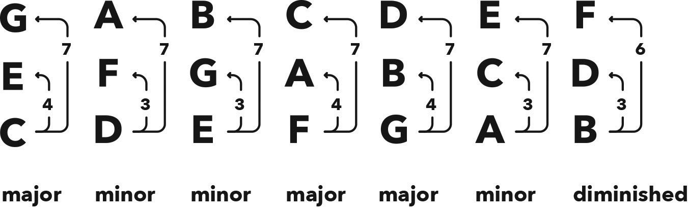

Triads in Major Keys 大调三和弦
Hack
All major keys always have four minor triads and only three major triads (out of seven triads total), which means that in a major key there are more minor triads than major triads.
大调音阶中总共有七个三和弦，其中包含四个小三和弦和三个大三和弦，这意味着在大调中，小三和弦的数量比大三和弦要多。
In other words, in the ‘happy’ key there are actually more ‘sad’ chords than ‘happy’ chords.
换句话说，在“快乐”的调中，实际上“悲伤”的和弦比“快乐”的和弦更多。
This emotional complexity allows us to express sadness within a happy home, and it’s how we make music tell the true story of our complex feelings.
这种情感复杂性使我们能够在幸福的环境中表达悲伤，音乐就是通过这种方式，来讲述我们复杂情感的真实故事。
When we compose a chord progression (i.e. the chords you string together to tell your musical story), we can eloquently communicate our inner narrative both by the chords we select and by their order.
当我们创作和弦进行（即你用来讲述音乐故事的和弦）时，我们可以通过选择的和弦及其顺序来优雅地传达内心的故事。

Figure 11.1 The seven triads in all major keys
图 11.1 所有大调中的七个三和弦
The diminished triad is a special type of minor triad, and you can think of it as the black sheep of our family.
减三和弦是一种特殊类型的小三和弦，你可以把它看作是我们家族中的另类。
The three semitones (minor 3rd) between its bottom and middle notes make it a minor, but the six semitone interval (instead of seven semitones) between its bottom and top notes is a diminished 5th, making it a diminished triad.
它的低音和中音之间有三个半音（小三度），因而是小三和弦；但从低音到高音只有六个半音（而不是七个），因此是减五度，形成减三和弦。
The diminished 5th is sometimes referred to as a tritone. 减五度有时被称为三全音。 ‘Tri’ means three, and a ‘tone’ is two semitones, describing its six semitones (3 x 2 semitones). “三”表示三个，“全音”表示两个半音，描述其六个半音（3 x 2 半音）。 In medieval Europe this dissonant interval was named the devil in music and subsequently banned. 在中世纪的欧洲，这个不和谐的音程被称为音中的魔鬼，随后被禁止。
INTERVAL 间隔
Diminished 5th (spelling = ♭5) six semitones
减五度（记法 = ♭5）六个半音
Chapter
You know that majors lift our spirits while minors drop the tears.
你知道大调调节我们的情绪，而小调使我们流泪。
So if we play in a major key then it’s all happy days, right?
所以如果我们用大调来演奏，那不就是快乐的日子吗？
Nope, don’t judge a book by the cover (well, other than this book, which has an awesome cover and awesome content!).
不，不能以貌取人（除了这本书，封面和内容都很棒！）。
Life is not only black and white or happy and sad: it is emotionally complex, and music can reflect that.
生活不仅仅是黑白分明或快乐和悲伤：它充满情感复杂性，音乐可以反映这一点。
Yes, of course, major triads are always happy.
当然，大三和弦总是快乐的。
However, in the key of C major, count the semitones between D F A (the second triad).
然而，在 C 大调中，数数 D F A（第二个三和弦）之间的半音数。
D to F is three semitones, which is a minor 3rd.
D 到 F 是三个半音，这是小三度。
What the…?! Oh yes you did! You just found a minor triad in a major key.
等等，什么？！对，你找到了大调中的小三和弦。
And you know what, there’s more.
你知道吗，还有更多。
Count the semitones between the bottom and middle notes in the other triads, and you’ll discover something even stranger.
计算其他三和弦底部和中间音符之间的半音数，你会发现更奇怪的事情。
E to G, A to C, and B to D are all three semitones as well, making them minors too.
E 到 G，A 到 C，以及 B 到 D，都是三个半音，因此也是小三和弦。
That’s four minor triads in a major key, and there’s only seven triads, which means there are only three major triads in a major key.
这意味着在大调中有四个小三和弦，总共只有七个三和弦，所以只有三个大三和弦。
This is massive news: There are more minor triads than major triads in a major key.
这可是个大新闻：大调中小三和弦比大三和弦多。
This is how we make music tell the true story of our feelings.
这就是我们通过音乐讲述感情的真实故事的方式。
For example, if you’re about to move to another city to pursue an exciting opportunity and you’re feeling positive, then chose a major key to convey this.
例如，如果你即将搬到另一个城市去追求令人兴奋的机会，并感到乐观，就选择一个大调来表达这种心情。
But, as it’s a bittersweet move since you have to say goodbye to friends and family, include some minor triads in your sequence of chords, or chord progression (i.e. the chords you string together to tell your musical story).
但是，如果这是一个苦乐参半的举动，因为你必须和朋友家人告别，那么在和弦进行中包含一些小三和弦。
On the other hand, if you’ve just broken up with your partner, choose a minor key for your chord progression, but if splitting was the best thing for both of you and you’re finally feeling content, add in some major triads to communicate this.
另一方面，如果你刚刚和伴侣分手，那么选择一个小调的和弦进行，但如果分手对双方来说是最好的选择，而且你最终感到释怀，那么在和弦中加入一些大三和弦来表达这种情绪。
Dim… what!? Let me explain.
减……什么？让我来解释一下。
First, don’t stress: there are still four minor triads in every key.
首先，不要紧张：每个键中仍然有四个小三和弦。
The diminished triad is a special type of minor triad: the black sheep of our family.
减三和弦是一种特殊类型的小三和弦：我们家族中的另类。
You can see it’s minor from the three semitones between its bottom and middle notes, which make it a minor 3rd.
你可以看出它是小三和弦，因为它的低音和中音之间有三个半音，小三度。
Why the weird name then?
那为什么名字这么奇怪？
If you compare its top note to the other triads in the key, you’ll notice it only has six semitones instead of the usual seven.
如果你将它的高音与调中的其他三和弦进行比较，你会发现它只有六个半音，而不是通常的七个。
You’ve already learned the interval of seven semitones is a perfect 5th (spelling = 5), and because six semitones is less (i.e. diminished) we refer to the dissonant interval of six semitones as a diminished 5th (spelling = ♭5).
你已经学过七个半音的间隔是纯五度（记谱法 = 5），而六个半音较少（即减少），所以称六个半音的不和谐间隔为减五度（记谱法 = ♭5）。
To conclude, a diminished triad has a minor 3rd (three semitones) and a diminished 5th (six semitones) above its root.
总结一下，减三和弦有一个小三度（三个半音）和一个减五度（六个半音）在其根音之上。
You’ll sometimes hear fellow musicians talking about a tritone.
你可能会听到其他音乐家谈论到三全音。
That’s just another name for the ♭5.
那只是减五度（♭5）的另一个名称。
‘Tri’ means three, and ‘tone’ means two semitones, so it’s describing the six (3 x 2) semitones.
“三”表示三个，“全音”表示两个半音，所以它描述的是六（3 x 2）个半音。
Tritone isn’t a great name, though, as it doesn’t provide the context the way that ‘diminished 5th’ does, because you know we’re talking about the 5th note.
然而三全音并不是一个很好的名称，因为它不像“减五度”那样提供上下文，因为你知道我们在谈论的是第五个音符。
For this reason, we won’t use the tritone name, but since you might hear it around, you’re now in the know.
出于这个原因，我们不会使用三全音的名称，但既然你可能会听到这个术语，你现在知道它是什么意思了。
By the way, there’s also an enharmonic name for this interval, but we’ll get to that later.
顺便说一句，这个音程还有一个等音名称，但我们会稍后再说。
The ♭5 is our most infamous interval, with a dark history that stretches back at least a thousand years.
♭5 是我们最臭名昭著的音程，至少有一千年的黑暗历史。
You may have heard of the devil in music, or, in its original Latin, diabolus in musica.
你可能听说过“音乐中的魔鬼”，或者用拉丁语 diabolus in musica。
That was a rather unflattering name (probably coined by the Roman Catholic Church) used back in the medieval era for the ♭5.
在中世纪，这个音程被谴责为魔鬼的表现，并被禁止使用。
To be fair, it is an evil sounding interval, and if you think back to a time when people believed disease was punishment from a god, it’s easy to understand why they thought the awful clashing sound from a ♭5 was the devil manifesting himself through music.
客观地说，它确实是一个邪恶的音程，如果你回想起一个时代，人们认为疾病是神的惩罚，那么很容易理解为什么他们认为 ♭5 那不和谐的声音是魔鬼通过音乐显现。
So there you have it, you’ve been warned. Use the ♭5 at your own risk!
所以，你已经被警告过了，小心使用 ♭5！